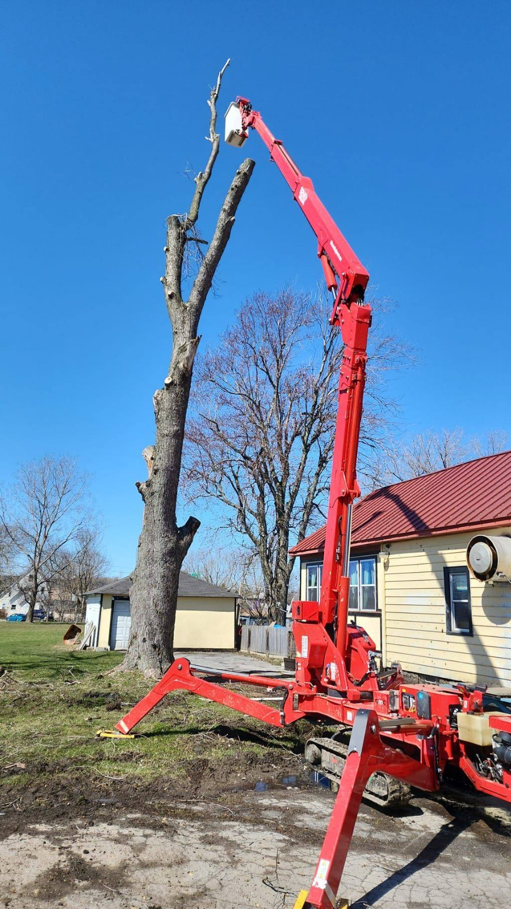

“Professional, efficient, and cleaned up afterward. Bills Tree Removal handled the job safely and made the process easy.”
S
Sarah M.Pittsford, NY
Need a tree removed before it becomes a bigger problem? Bills Tree Removal helps homeowners and businesses in Rochester, NY with professional tree removal, emergency tree service, tree trimming, and stump grinding.
Whether your tree is leaning, storm-damaged, dead, overgrown, or too close to your home, our team can inspect the situation and provide a free estimate.

Use real customer reviews here for stronger ad landing page trust and better conversion.
“Professional, efficient, and cleaned up afterward. Bills Tree Removal handled the job safely and made the process easy.”
“Fast help after storm damage. The crew responded quickly and helped clear a dangerous tree problem.”
“Careful work around the property. They took time to protect the yard and left the area clean.”
Small tree issues can become expensive emergencies overnight. A leaning tree, weak branch, damaged trunk, or dead tree near your home can put your roof, garage, driveway, fence, landscaping, or outdoor space at risk.
Call (585) 460-3501Bills Tree Removal provides reliable tree services for residential and commercial properties throughout Rochester, NY.

Safe removal for dead, leaning, storm-damaged, or unwanted trees near homes, fences, driveways, and outdoor spaces.

Fast help for fallen trees, dangerous hanging limbs, blocked driveways, and urgent storm-related tree problems.

Improve clearance, appearance, tree structure, and everyday property safety with careful trimming.

Clear old stumps and make your yard cleaner, safer, easier to mow, and ready for new landscaping.
Tree removal should never be rushed. Bills Tree Removal focuses on careful planning, property protection, and clean job completion.
We review the tree’s size, condition, location, access points, and nearby structures before starting the job.
Every tree is different. We provide free estimates so you can understand the recommended work before moving forward.
Serving Rochester, NY and nearby Monroe County areas with tree removal, trimming, stump grinding, and emergency service.
Tree work can be messy, but a professional job should leave your property clean, safe, and manageable.
When hiring a tree removal company, safety and professionalism matter. Bills Tree Removal is proud to be a TCIA Accredited tree care company, showing our commitment to safe work practices, professional tree care standards, and responsible service.
For Rochester homeowners and businesses, TCIA Accreditation adds another level of confidence when choosing a company for tree removal, emergency tree service, tree trimming, or stump grinding.
Call (585) 460-3501Replace these sample images with real project photos for the strongest trust signal.


Tree removal pricing depends on the tree’s size, condition, location, access, and how close it is to homes, fences, garages, driveways, utility areas, or other structures. The best way to get an accurate price is to request a free estimate.
Tell us what kind of tree problem you are dealing with.
We review the tree, location, access, condition, and safety concerns.
You receive a clear recommendation before the job begins.
Our team completes the work with safety and cleanup in mind.
Bills Tree Removal serves Rochester, NY and nearby Monroe County communities.
Every tree is unique. Size, condition, location, access, and nearby structures affect the price, which is why Bills Tree Removal provides free estimates.
Yes. Bills Tree Removal offers 24/7 emergency tree service for urgent tree problems in Rochester, NY.
Yes. Trees near homes, garages, fences, or driveways require careful planning to help protect the property during removal.
Yes. Bills Tree Removal provides tree trimming services for overgrown, low-hanging, or unsafe branches in Rochester, NY.
Yes. Stump grinding is available for old stumps or remaining stumps after tree removal.
Bills Tree Removal serves Rochester and nearby areas, including Greece, Irondequoit, Pittsford, Penfield, Fairport, Henrietta, West Henrietta, Rush, and East Rochester.

Do not wait until a damaged or unsafe tree becomes a bigger problem. Bills Tree Removal provides tree removal, tree trimming, emergency tree service, and stump grinding in Rochester, NY and nearby areas.